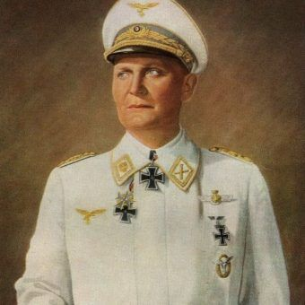

| Data i miejsce urodzenia: |
Rosenheim, Niemcy, 12 stycznia 1893 |
| Data i miejsce śmierci: |
Norymberga, Niemcy, 15 października 1946 |
| Niemiecki oficer i działacz nazistowski, jeden z twórców i głównych postaci hitlerowskiej
III Rzeszy, zbrodniarz wojenny. As myśliwski z czasów I wojny światowej, w latach 1933–1945
minister lotnictwa Rzeszy, w latach 1935–1945 dowódca niemieckiego lotnictwa wojskowego
(Luftwaffe). W latach 1928–1945 poseł do Reichstagu. Od 10 kwietnia 1933 do 23 kwietnia
1945 premier Prus, największego niemieckiego kraju związkowego. Był jedną z najważniejszych
osób, które umożliwiły zbudowanie potęgi Adolfa Hitlera. Zmarł w wyniku samobójstwa.
|

Hermann Goring, 1941
|